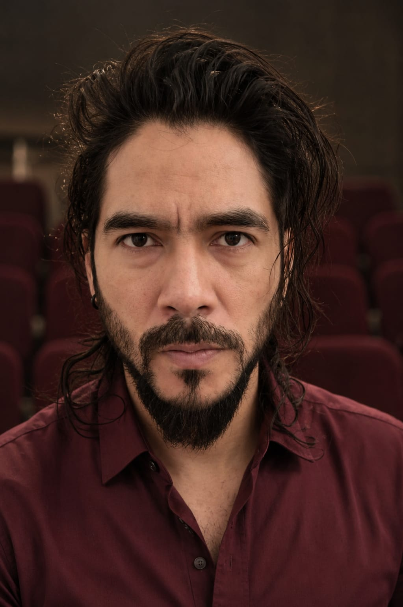
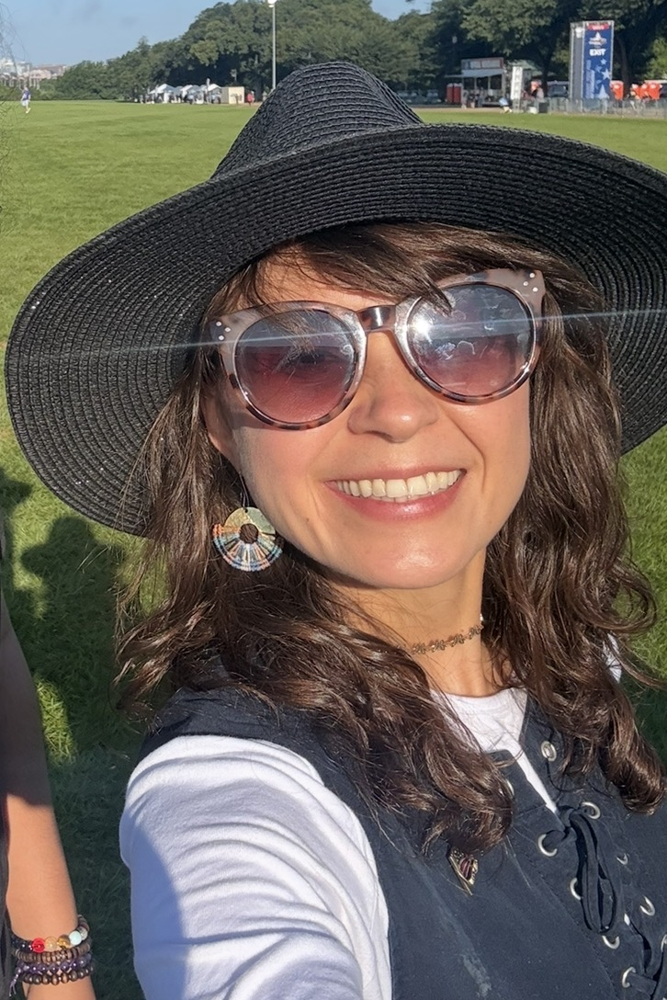
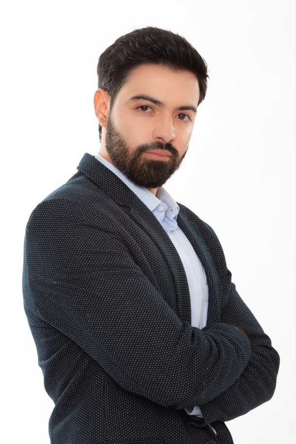

Quiénes somos
Casa Behar reúne a un grupo de artistas colombianos apasionados por contar historias que representan nuestra cultura, nuestras raíces y la realidad de quienes dejaron su país persiguiendo un sueño.
Producción y creación escénica
Creamos producciones teatrales multimedia que combinan actuación en vivo, proyecciones audiovisuales y narrativas contemporáneas, con historias inspiradas en experiencias reales de la comunidad latina en Estados Unidos.
Conectar historias con la gente
Creemos que el teatro tiene la capacidad de unir personas, abrir conversaciones difíciles y celebrar aquello que nos hace únicos como comunidad latina, conectando con cualquier espectador que haya vivido cambios, pérdidas, esperanza o el deseo de construir un futuro mejor.
Nuestra gente

Ricardo de la Vega Domínguez
Director, dramaturgo y actorActor, dramaturgo y director colombiano. Licenciado en Arte Dramático de la Universidad del Valle y gestor cultural de la Universidad de Córdoba (Argentina). Más de veinte años de trayectoria en teatro, cine y televisión, con producciones para Netflix, Caracol Televisión, RCN Televisión y Fox.

Tatiana Behar Russy
Productora generalProductora audiovisual y publicista colombiana, con Maestría en Administración de la Industria del Entretenimiento de Carnegie Mellon University. Más de quince años liderando proyectos de cine, televisión, teatro y producción audiovisual en Colombia y Estados Unidos.

Diana María García Beterete
Productora técnicaIngeniera apasionada por las tecnologías de audio y video, con Maestría en Sistemas de Información de Carnegie Mellon University. Brinda apoyo técnico en la producción de cortometrajes y obras de teatro junto al equipo de Casa Behar.

Salomón Behar Jaramillo
Director y productorLicenciado en Arte Dramático de la Universidad del Valle, magíster en Dirección y Administración de Empresas de la Universidad Internacional de La Rioja y actualmente cursando el Máster en Teatro y Artes Escénicas en la Universidad Complutense de Madrid. Actor, director y productor con participación en obras como La Remolienda y Antígona Vélez, y en las series Ana Karenina (Caracol Televisión) y Darío Gómez (RCN Televisión). Dirigió y produjo Un pequeño asesinato sin consecuencias y es fundador de Casa Behar.